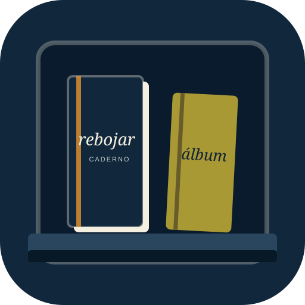

EXPORTAR LEITURA
A compra libera somente o arquivo de leitura que você preparou nesta demonstração. O aplicativo completo continua sendo um produto separado.
A exportação avulsa não exige conta. Entre somente para assinar ou recuperar uma assinatura.
CONTA DO CADERNO
A conta é usada somente para a assinatura mensal e sua recuperação.